一层没变，为什么叠起来以后会有极化？
先别急着把 sliding 当作“动作”。真正的状态变量是 stacking registry：两层怎样对齐，会改变界面对称性和电荷分布，从而改变面外偶极；滑动只是连接不同 registry 的结构通道。
素材规则：原文与 Figure 均来自项目 Google Drive 的论文 PDF；整页 600 DPI 渲染后裁取。跨栏/跨页按论文阅读顺序拼接，原文未改。长截图仅沿空白行切成连续静态片段，网页中无缝显示。
1 · Wu & Li 2021：先解释 registry 为什么 polar
AB-stacked BN 的关键不是“某一层天生带 P”，而是上下层相对配位使界面环境不等价，伴随层间电荷转移；非中心对称 registry 因而允许面外偶极。只有在这个基础上，作者才把相反极化 registry 与面内 translation 联系起来。
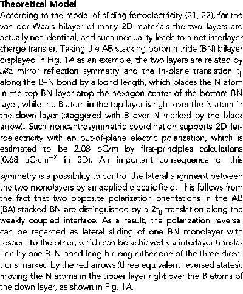

作者实际建立了什么
registry → symmetry/charge transfer → Pz，并指出 translation 可以连接相反极化结构。
这里还没有什么
没有证明微米尺度 switching 必然整体同步滑动，也没有给出真实成核与 domain-wall 动力学。
2 · Yasuda 2021：AA′、AB、BA 与 ±P
AA′ stacking 恢复整体 inversion symmetry；AB / BA 则交换上下层局域注册关系。原子配位和 2pz 环境因此不同，对应相反方向的面外偶极。小 twist 后样品重构成 AB / BA 三角域，PFM 给出 polar-domain 的空间读出。
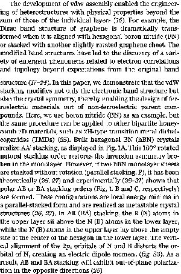

3 · Vizner Stern 2021：把 stacking domain 对到真实空间信号
KPFM 中，同一个 hBN interface 出现大片黑白相间区域；domain 内 surface potential 近似恒定，跨窄边界跳变。作者再结合 stacking-dependent polarization 计算，把 AB / BA assignment 与 interfacial polarization 联系起来。注意：KPFM 直接测的是 surface potential，不是 polarization vector 本身。


4 · Meng 2022：多一层，状态空间就变了
bilayer 只有一个 vdW interface，最小图像自然是两个相反 interfacial dipoles；trilayer 有两个 interface，它们可以不同时翻转，所以 net polarization 能经过 intermediate state。文章先用 layer-number dependence 约束解释，再讨论为什么普通 domain-boundary movement 不足以解释异常状态，随后提出 anti-parallel interfacial-dipole model。
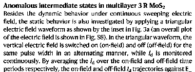
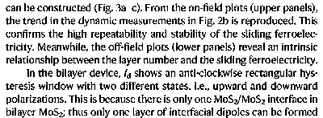
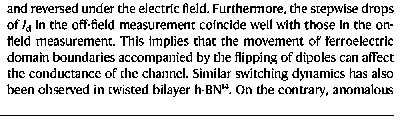
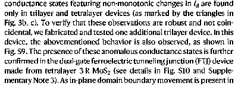
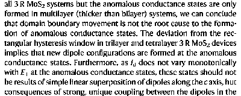
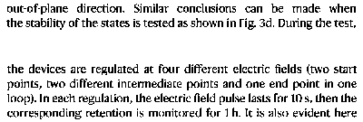
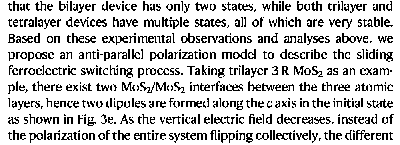
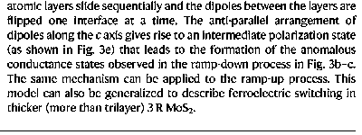

5 · Ji 2023：把材料例子收束成 symmetry
前四篇已经建立结构直觉，Ji 的工作再问一般问题：给定 monolayer layer group，经过 rotation / translation 后，bilayer 保留或新生哪些 symmetry，又允许 IP / OP / CP / NP 中哪种 polarization？这是一套 endpoint criterion，而不是 switching kinetics。
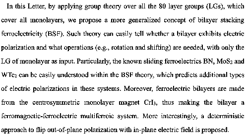
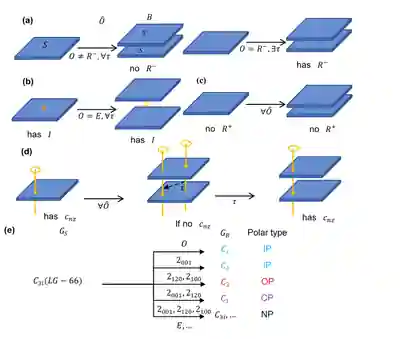
现在可以稳地说
特定 registry 能改变 bilayer symmetry 与界面电荷分布；AB/BA 可对应相反 P；多界面让 multilayer 出现组合式中间极化态。
还不能直接说
真实器件一定 coherent sliding；coercive field 等于 unit-cell barrier；所有 interface 同步翻转；symmetry-allowed path 就是实际唯一动力学路径。